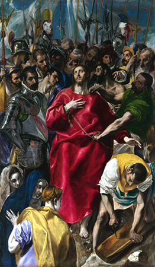

-
"La Mona Lisa"

Es la pintura mejor guardada del mundo, realizada por Leonardo de Vinci en alguna fecha que aun no se establece con exactitud, entre los años 1503-1519, actualmente se encuentra en el Museo del Louvre, París.
-
"La Virgen del huso"

También conocida como Virgen de la rueca, fue pintada en 1501, por Leonardo da Vinci. Muestra a un Jesús de niño alejándose de los brazos de su Madre y mirando la cruz, como signo de su destino
-
"La Última Cena"

Considerada la mejor obra de arte de Leonardo Da Vinci en 1498, La Última Cena es una importante pintura del periodo renacentista. La imagen muestra a Jesús con sus discípulos en su última cena.
-
"El Expolio"

Cuadro al óleo que se encuentra actualmente en la Catedral de Toledo, pintado entre 1577 y 1579. Se trata de una obra compleja impregnada de simbolismo cristiano, considerada una de las obras cúlmenes de El Greco.
-
"El nacimiento de Venus"

Se trata de uno de los cuadros más representativos del renacimiento italiano, pintado entre 1484 y 1486, por Sandro Botticelli. Se encuentra actualmente en la Galería Uffizi, Florencia.
-
"Adán y Eva"

Obra de grandes dimensiones actualmente en el Museo del Prado, pintada en 1504, por Alberto Durero.
-
"Madonna Sixtina"

Obra al óleo de tema religioso. Autor: Rafael Sanzio, pintada por encargo del Papa Julio II en 1512.
-
"La creación de Adán"

Trozo de fresco pintado Miguel Ángel (1512) sobre yeso, en el techo de la Capilla Sixtina en el Vaticano. Lugar donde se encuentran las obras de pintura y escultura, más reconocidas del Renacimiento.
-
"El Juicio Final"

Este cuadro de Miguel Ángel Buonarroti, completado en el año 1541, se encuentra en la pared del altar de la Capilla Sixtina de la Ciudad del Vaticano. El cuadro trata de la segunda venida de Jesús, el día en que Dios juzgará a toda la humanidad.